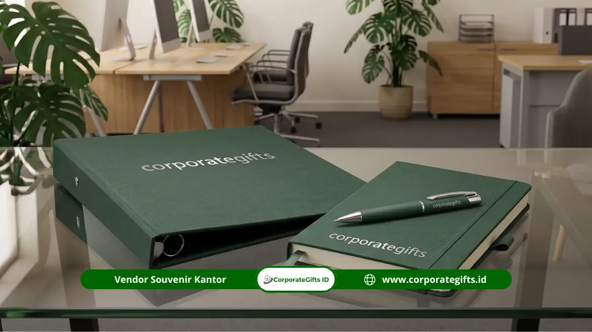

Corporate Gifts ID - Desain seminar kit adalah perancangan visual terpadu pada perlengkapan acara (seperti tas goodie bag, buku notebook, pulpen, kartu tanda pengenal, dan sertifikat) yang bertujuan memperkuat identitas serta branding institusi penyelenggara. Desain yang efektif harus mampu menjaga konsistensi palet warna maksimal tiga jenis, mencantumkan logo proporsional, serta menyesuaikan gaya estetika dengan profil audiens yang hadir.
Desain perlengkapan seminar sering kali menjadi elemen yang diremehkan panitia, padahal komponen fisik inilah yang memberikan dampak terbesar pada kesan pertama peserta terhadap kredibilitas sebuah acara. Berbagai studi manajemen acara membuktikan bahwa lebih dari 70% peserta menilai tingkat profesionalisme penyelenggara dari kualitas dan keselarasan visual paket kit yang mereka terima pada hari pertama.
Poin Kunci Desain Seminar Kit Profesional:
- Konsistensi Visual: Membangun persepsi profesionalisme tinggi melalui keseragaman logo, font, dan warna di semua barang.
- Tiga Elemen Wajib: Setiap item kit wajib mencantumkan logo institusi/sponsor, nama kegiatan, dan tahun atau tanggal pelaksanaan.
- Palet Warna Terkontrol: Batasi warna maksimal pada 3 palet utama untuk menjaga hasil cetak tetap elegan dan rapi.
- Relevansi Karakter Acara: Gaya desain elegan dan berwibawa untuk korporat, sedangkan gaya dinamis-kreatif untuk workshop generasi muda.
- Standar Cetak Industri: Seluruh master file grafis wajib disiapkan minimal resolusi 300 dpi dalam format ruang warna CMYK.
Prinsip Dasar Desain Seminar Kit yang Efektif
Desain seminar kit yang baik bertumpu pada konsistensi warna, tipografi yang jelas dan mudah dibaca, proporsi logo yang seimbang, serta integrasi identitas visual di seluruh medium fisik. Terdapat lima prinsip mendasar yang berlaku untuk seluruh skala acara:
1. Konsistensi Visual Antar Item
Semua item di dalam satu paket mulai dari tote bag, map berkas, buku agenda, pulpen grafir, hingga tali lanyard name tag harus menggunakan palet warna, tipografi, dan penempatan logo yang selaras. Inkonsistensi nada warna antar barang akan menimbulkan kesan bahwa perlengkapan dirakit secara tergesa-gesa dari vendor acak tanpa proses kendali mutu yang baik.
2. Hierarki Informasi yang Jelas
Tampilkan informasi dalam urutan prioritas visual yang logis: logo penyelenggara atau sponsor utama diletakkan paling menonjol, disusul nama tema acara, kemudian tanggal serta lokasi sebagai detail pendukung. Hindari memadati media cetak berukuran kecil dengan terlalu banyak teks promosi.
3. Tipografi yang Bersih dan Terbaca
Gunakan maksimal dua keluarga font dalam satu paket desain kit, yaitu satu font berbobot tebal untuk judul kegiatan dan satu font standar berkarakter jelas untuk teks pendukung. Font sans-serif modern seperti Inter, Poppins, atau Montserrat sangat direkomendasikan karena memberikan hasil cetak yang tajam di berbagai media bahan seperti kain kanvas, kertas buku, maupun permukaan logam.
4. Palet Warna Terkontrol
Batasi penggunaan warna maksimal tiga warna utama untuk menjaga nuansa tetap berkelas. Warna primer umumnya diadopsi dari identitas merek (brand identity) penyelenggara, dilengkapi satu warna aksen kontras dan satu warna netral seperti putih, abu-abu muda, atau hitam matte.
5. Resolusi dan Format File yang Tepat
Seluruh file desain grafis harus disiapkan dalam resolusi tinggi minimal 300 dpi menggunakan ruang warna CMYK guna memastikan akurasi hasil cetak. Menyiapkan desain dalam format RGB digital akan memicu deviasi warna fisik yang sangat mencolok setelah proses pencetakan selesai.
Menyesuaikan Desain Seminar Kit dengan Karakter Acara
Setiap format kegiatan menuntut karakter visual yang berbeda. Konferensi bisnis korporat menuntut desain yang elegan dengan material eksklusif, sedangkan workshop industri kreatif lebih leluasa mengeksplorasi warna-warna cerah dengan ilustrasi ekspresif.
Memahami audiens sasaran adalah langkah awal paling penting dalam menentukan apakah paket seminar kit promosi Anda harus bernuansa resmi, kasual, edukatif, atau futuristik.
Tabel Rekomendasi Desain untuk 7 Jenis Acara
Berikut matriks pendekatan gaya desain, pemilihan palet warna, dan item khas untuk tujuh jenis acara terpopuler di Indonesia:
| Jenis Acara | Palet Warna Unggulan | Kombinasi Item Khas | Karakter Gaya Desain |
|---|---|---|---|
| Seminar Akademik & Kampus | Biru tua, abu-abu terang, putih | Notebook spiral, handbook modul, sertifikat linen | Formal, rapi, bersih, mengutamakan keterbacaan materi |
| Seminar Korporat & B2B | Navy blue, emas, hitam matte, perak | Hardcover notebook deboss, pulpen metal grafir, tumbler SUS304 | Mewah, elegan, minimalis, penekanan prestise brand |
| Workshop Kreatif & Desain | Kuning mustard, hijau sage, terakota | Sketchbook unruled, spidol lettering, tool set pouch | Playful, dinamis, ekspresif, eksplorasi tipografi seni |
| Pelatihan Lembaga Pemerintah | Merah marun, biru instansi, aksen emas | Map kulit imitasi, binder jilid, sertifikat berhologram | Simbolik, institusional, formal, layout terstruktur baku |
| Seminar Kesehatan & Medis | Hijau mint, biru toska, putih bersih | Buku saku infografis, sanitizer pouch, tote bag steril | Higienis, menenangkan, tepercaya, informatif jelas |
| Seminar Organisasi Mahasiswa | Warna kontras bergradasi modern | Tote bag kanvas, lanyard printing 2 sisi, stiker vinyl | Energik, youthful, modis, sangat cocok untuk media sosial |
| Konferensi Tingkat Internasional | Netral: abu-abu monokrom + aksen warna tema | Tas laptop eksklusif, smart notebook, souvenir budaya lokal | Kosmopolitan, inklusif, berstandar global, prestisius |
Elemen Desain yang Wajib Ada di Setiap Item
Setiap item souvenir dalam paket seminar kit wajib memuat elemen identitas kunci agar fungsi promosinya berjalan maksimal. Penambahan fitur interaktif seperti kode QR terhubung materi digital kini menjadi tren wajib yang memudahkan distribusi bahan paparan narasumber tanpa memboroskan kertas.

Implementasi elemen grafis resolusi tinggi CMYK pada berbagai material fisik perlengkapan seminar korporat.
Tabel Fungsi Strategis Elemen Desain Seminar Kit
Berikut rincian elemen grafis yang wajib disematkan beserta catatan teknis produksinya:
| Elemen Desain | Fungsi Strategis | Standar Produksi & Aplikasi Cetak |
|---|---|---|
| Logo Penyelenggara & Sponsor | Identitas sentral penyelenggara dan mitra pendukung acara | Vektor resolusi 300 dpi; ukuran proporsional minimal 3 cm di tas |
| Nama & Tanggal Acara | Penanda historis kegiatan sebagai arsip berharga | Gunakan font berbobot tegas yang mudah terbaca dari jarak pandang normal |
| Tema atau Tagline | Mengomunikasikan pesan inti visi seminar | Maksimal 6-8 kata; hindari kalimat berbelit-belit yang menyita ruang cetak |
| Palet Warna Terpadu | Membangun harmoni visual lintas berbagai produk fisik | Samakan kode Pantone/CMYK pada vendor tas, buku, dan merchandise |
| Kode QR Materi Digital | Akses instan unduh slide presentasi dan sertifikat elektronik | Wajib uji pemindaian kamera HP sebelum mencetak ribuan lembar modul |
| Kontak & Akun Media Sosial | Sarana jejaring lanjutan dan perluasan komunitas peserta | Ditempatkan di halaman penutup modul atau saku belakang map berkas |
Contoh Desain Seminar Kit untuk Acara Korporat
Paket seminar kit bertema korporat dirancang khusus untuk memproyeksikan citra kemapanan institusi di hadapan jajaran eksekutif, investor, dan mitra bisnis penting. Berikut standar kurasi material dan teknik cetaknya:
- Tas Jinjing Eksekutif: Memakai bahan kanvas premium 12 oz atau kulit sintetis PU. Logo diaplikasikan dengan bordir presisi tinggi atau emblem deboss bertekstur.
- Buku Agenda Hardcover: Sampul tebal berbalut kulit sintetis dengan finishing blind deboss logo. Menggunakan kertas bookpaper bertekstur lembut seberat 90 gsm.
- Alat Tulis Metalik: Pulpen berbahan logam alloy berbobot seimbang dengan ukiran nama acara melalui teknologi grafir laser fiber.
- Tumbler Stainless SUS304: Botol insulasi vakum berpelapis cat doff dengan grafir laser logo yang tahan lama dan tidak mudah terkelupas.
- Sertifikat Kehadiran: Dicetak di atas kertas bertekstur mewah (seperti linen atau concord 220 gsm) yang diserahkan dalam map sertifikat formal.
Contoh Desain Seminar Kit untuk Acara Akademik & Kampus
Berbeda dengan segmen korporat, paket perlengkapan seminar akademik mengutamakan kelengkapan materi pembelajaran dan fungsionalitas praktis:
- Tote Bag Spunbond / Blacu: Tas praktis yang dicetak sablon satu atau dua warna dengan logo universitas dan nama simposium.
- Buku Catatan Softcover: Buku jilid spiral bergaris yang ringan dibawa dan memiliki ruang luas untuk mencatat poin pemateri.
- Buku Modul Ringkas: Cetak handbook materi berukuran A5 dengan halaman dalam hitam-putih untuk efisiensi biaya serta sampul luar full color laminasi doff.
- Tali Lanyard Printing: Tali gantungan ID card berbahan tisu lembut dengan cetak sublimasi full-color yang sering dikoleksi oleh mahasiswa.
Kesalahan Umum Desain Seminar Kit dan Mitigasinya
Menghindari sejumlah kesalahan teknis desain berikut terbukti mampu menyelamatkan anggaran pengadaan dari risiko kegagalan cetak massal:
- Menggunakan File Gambar Resolusi Rendah: Mengambil logo dari media sosial dengan resolusi di bawah 150 dpi akan membuat cetakan pecah dan buram. Selalu gunakan file master vektor (.ai, .cdr, atau PDF cetak).
- Penyimpangan Nada Warna (Color Shift): Menyiapkan desain dengan palet RGB bukan CMYK. Layar monitor memancarkan cahaya RGB, sedangkan mesin cetak membaca tinta fisik CMYK.
- Kepadatan Teks Berlebihan: Memaksakan seluruh profil organisasi masuk ke dalam pulpen atau binder kecil akan membuat desain terlihat sesak dan tidak estetik.
- Melewatkan Tahap Uji Cetak Fisik (Proofing): Selalu minta sampel dummy atau bukti cetak fisik kepada vendor sebelum memberikan persetujuan produksi massal ratusan paket.
- Typo pada Nama Pembicara dan Gelar: Kesalahan penulisan nama narasumber atau tanggal di sertifikat cetak memerlukan biaya ekstra untuk mencetak ulang dari nol.
Kesimpulan Praktis
Kunci sukses dalam merancang desain seminar kit bukan terletak pada seberapa mahal anggarannya, melainkan pada kedisiplinan menjaga keselarasan visual dan relevansi desain terhadap target audiens. Dengan panduan brief desain yang jelas, pemilihan palet warna terkontrol, serta mitra percetakan berpengalaman di Corporate Gifts ID, paket seminar kit Anda akan menjadi media promosi jangka panjang yang membanggakan.
Konsultasikan kebutuhan desain dan pengadaan paket seminar kit custom logo Anda bersama tim ahli kami hari ini untuk penawaran harga terbaik dan sampel mockup digital cuma-cuma.
Pertanyaan Seputar Desain Seminar Kit (FAQ)

Ditulis oleh: Arinda Zakia
Senior Corporate Gifting SpecialistPraktisi kurasi souvenir dan merchandise korporat di CorporateGifts.ID dengan pengalaman lebih dari 8 tahun dalam membantu ratusan perusahaan multinasional, instansi BUMN, dan institusi pendidikan merancang program gifting yang berkesan.
Lihat Profil Lengkap & Panduan Lainnya